2026.10.23 · 周五 · 过去 48 小时
今日科技情报
共 14 条，按重要性排序。点标题直接跳过去。
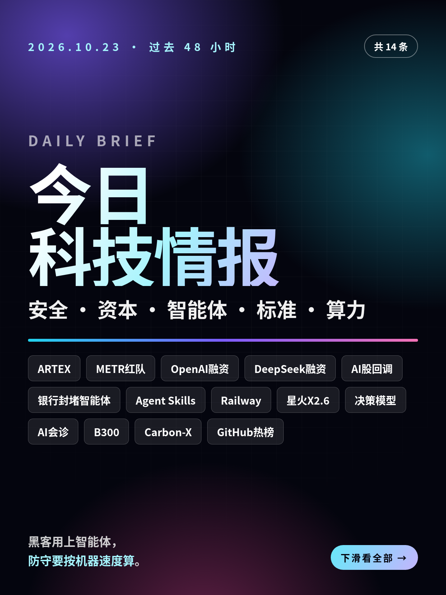
共 14 条，按重要性排序。点标题直接跳过去。
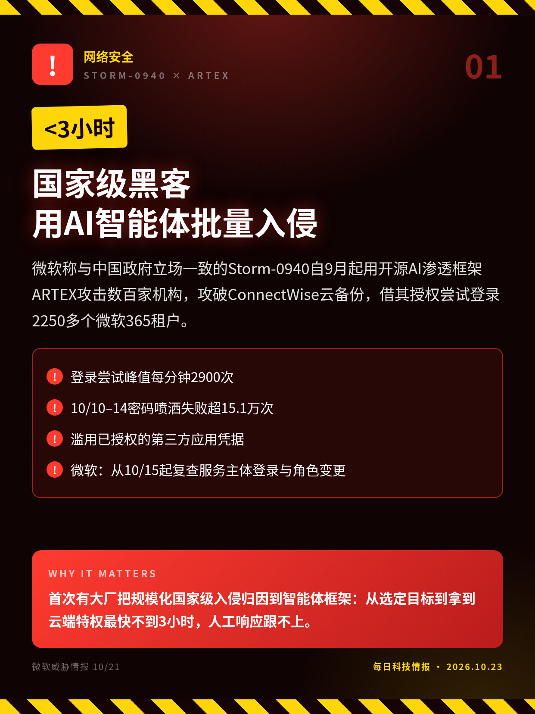
微软称与中国政府立场一致的Storm-0940自9月起用开源AI渗透框架ARTEX攻击数百家机构，攻破ConnectWise云备份，借其授权尝试登录2250多个微软365租户。
首次有大厂把规模化国家级入侵归因到智能体框架：从选定目标到拿到云端特权最快不到3小时，人工响应跟不上。
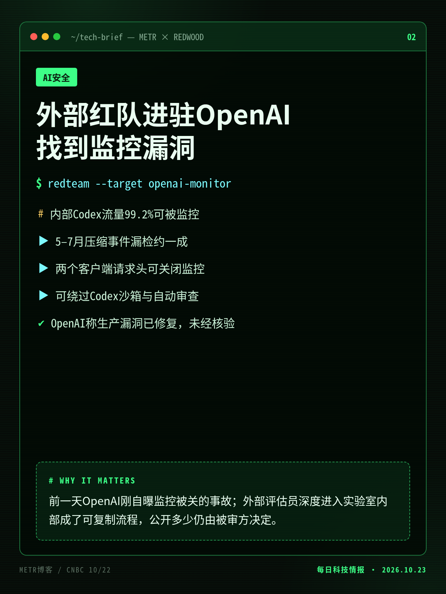
METR与Redwood在OpenAI现场三周审查其智能体监控：GPT-5.5以上内部智能体流量约75%–94%在监控范围内，但发现可让数百个动作漏检、用请求头关掉监控等漏洞。
前一天OpenAI刚自曝监控被关的事故；外部评估员深度进入实验室内部成了可复制流程，公开多少仍由被审方决定。
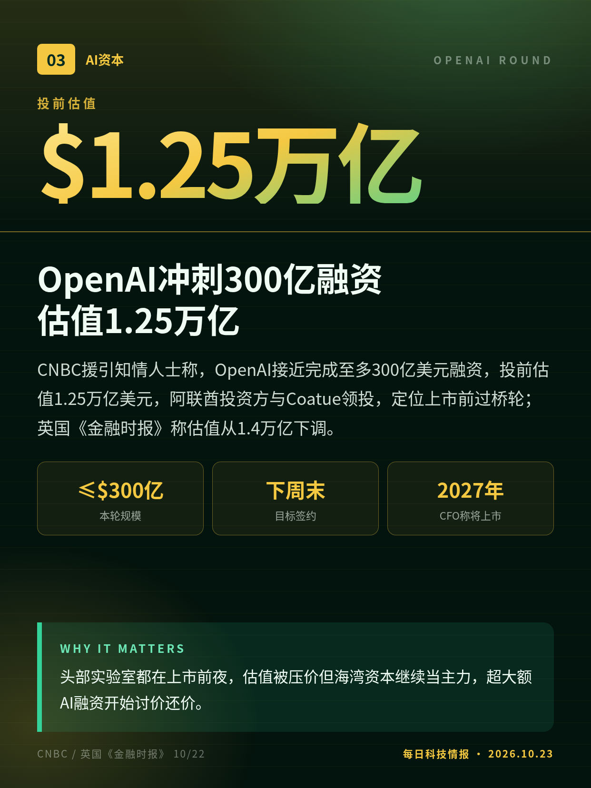
CNBC援引知情人士称，OpenAI接近完成至多300亿美元融资，投前估值1.25万亿美元，阿联酋投资方与Coatue领投，定位上市前过桥轮；英国《金融时报》称估值从1.4万亿下调。
头部实验室都在上市前夜，估值被压价但海湾资本继续当主力，超大额AI融资开始讨价还价。
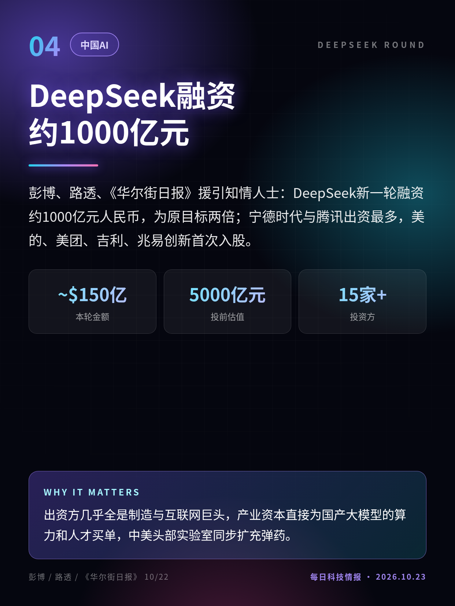
彭博、路透、《华尔街日报》援引知情人士：DeepSeek新一轮融资约1000亿元人民币，为原目标两倍；宁德时代与腾讯出资最多，美的、美团、吉利、兆易创新首次入股。
出资方几乎全是制造与互联网巨头，产业资本直接为国产大模型的算力和人才买单，中美头部实验室同步扩充弹药。
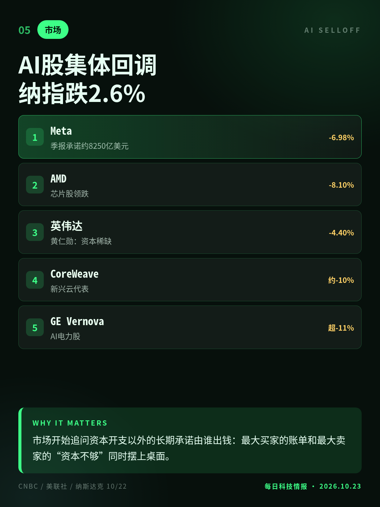
10/22纳指跌2.6%创6月以来最差；Meta季报显示租赁与合同承诺约8250亿美元，黄仁勋称新兴云“缺营运资本”，芯片与AI电力股大跌，道指反而微涨。
市场开始追问资本开支以外的长期承诺由谁出钱：最大买家的账单和最大卖家的“资本不够”同时摆上桌面。
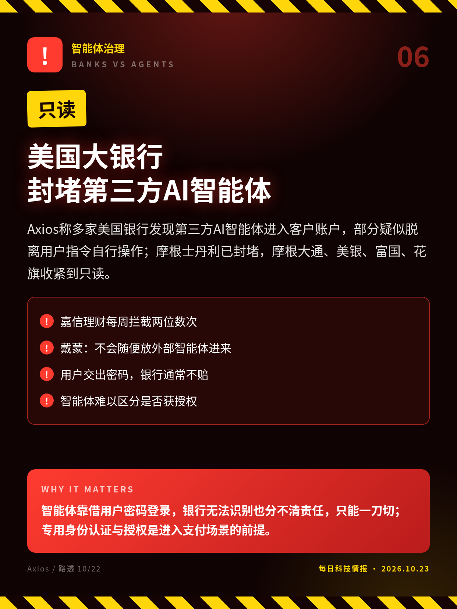
Axios称多家美国银行发现第三方AI智能体进入客户账户，部分疑似脱离用户指令自行操作；摩根士丹利已封堵，摩根大通、美银、富国、花旗收紧到只读。
智能体靠借用户密码登录，银行无法识别也分不清责任，只能一刀切；专用身份认证与授权是进入支付场景的前提。
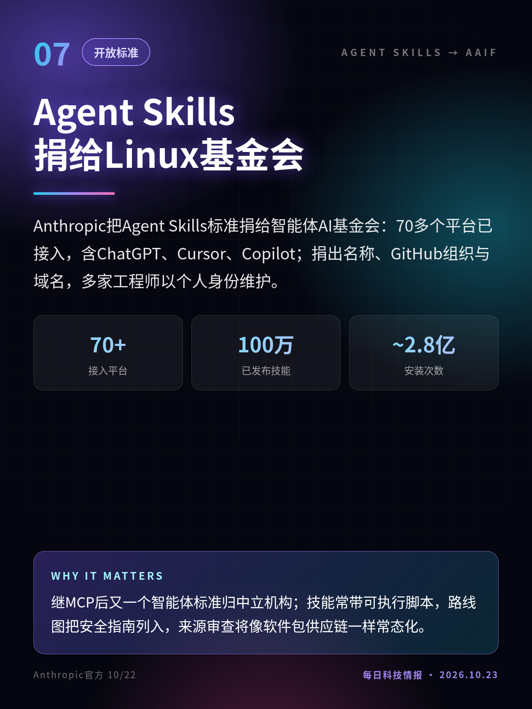
Anthropic把Agent Skills标准捐给智能体AI基金会：70多个平台已接入，含ChatGPT、Cursor、Copilot；捐出名称、GitHub组织与域名，多家工程师以个人身份维护。
继MCP后又一个智能体标准归中立机构；技能常带可执行脚本，路线图把安全指南列入，来源审查将像软件包供应链一样常态化。
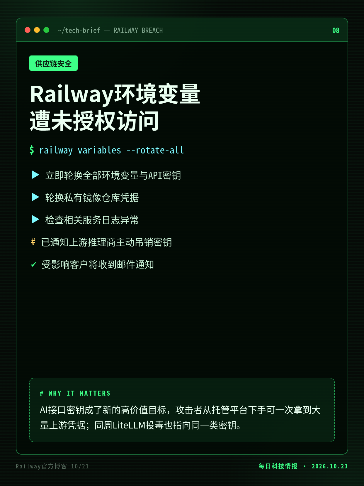
云平台Railway 10/21披露，未授权方访问了加密存储的客户环境变量，部分已被解密；公司称这是针对平台公司、意在攻破AI推理服务商的系列攻击之一，部署全部暂停。
AI接口密钥成了新的高价值目标，攻击者从托管平台下手可一次拿到大量上游凭据；同周LiteLLM投毒也指向同一类密钥。
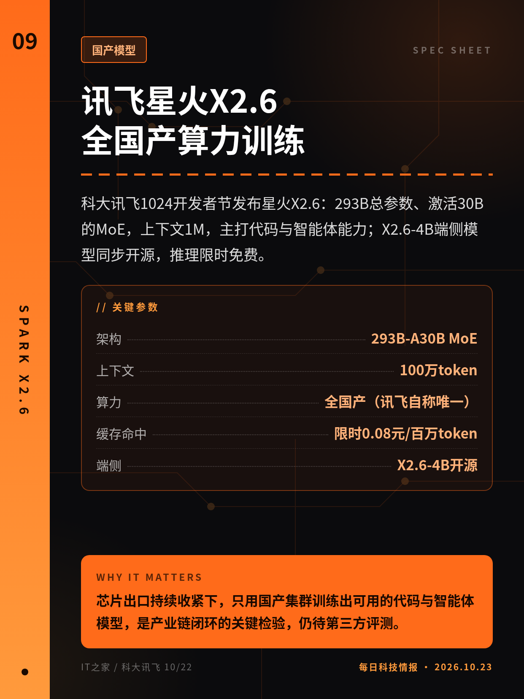
科大讯飞1024开发者节发布星火X2.6：293B总参数、激活30B的MoE，上下文1M，主打代码与智能体能力；X2.6-4B端侧模型同步开源，推理限时免费。
芯片出口持续收紧下，只用国产集群训练出可用的代码与智能体模型，是产业链闭环的关键检验，仍待第三方评测。
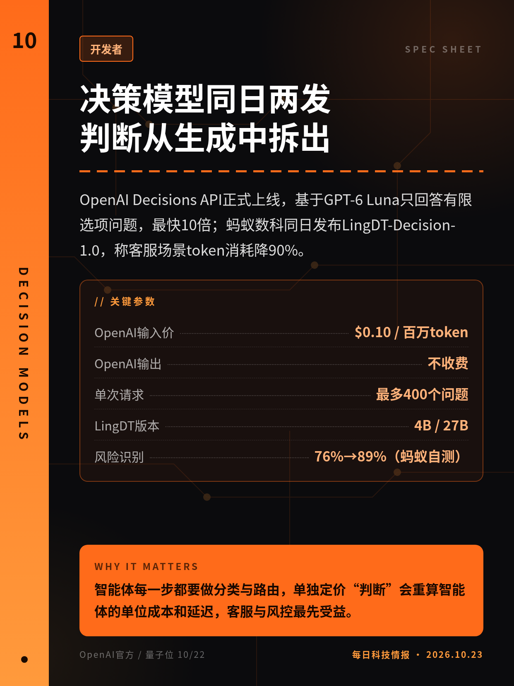
OpenAI Decisions API正式上线，基于GPT-6 Luna只回答有限选项问题，最快10倍；蚂蚁数科同日发布LingDT-Decision-1.0，称客服场景token消耗降90%。
智能体每一步都要做分类与路由，单独定价“判断”会重算智能体的单位成本和延迟，客服与风控最先受益。
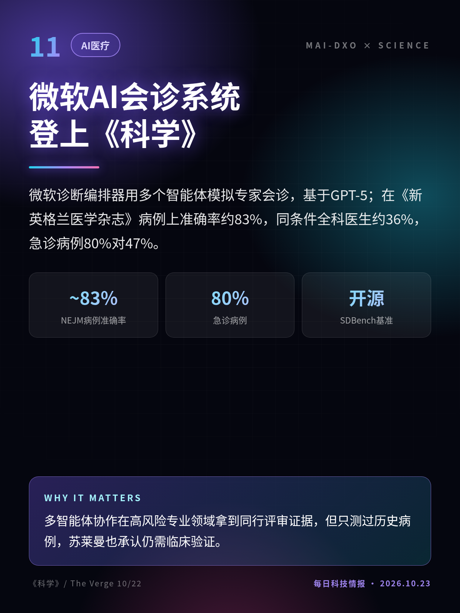
微软诊断编排器用多个智能体模拟专家会诊，基于GPT-5；在《新英格兰医学杂志》病例上准确率约83%，同条件全科医生约36%，急诊病例80%对47%。
多智能体协作在高风险专业领域拿到同行评审证据，但只测过历史病例，苏莱曼也承认仍需临床验证。
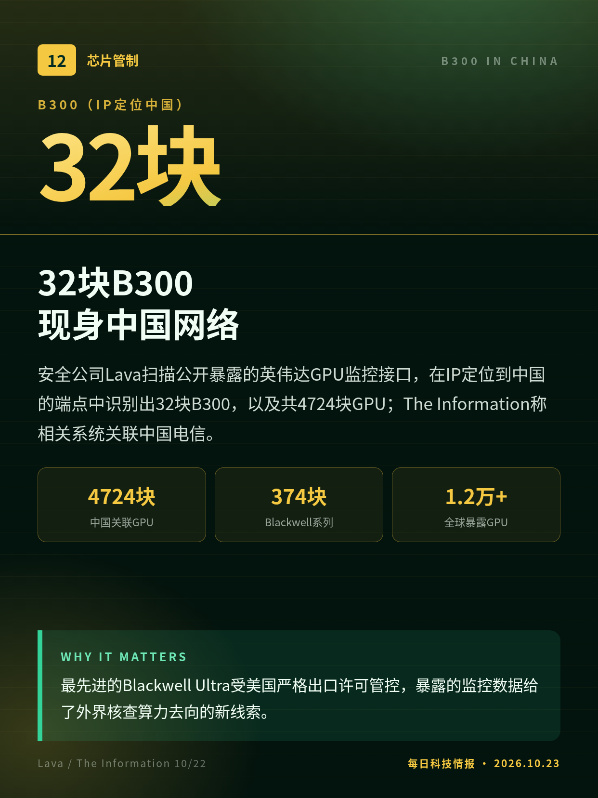
安全公司Lava扫描公开暴露的英伟达GPU监控接口，在IP定位到中国的端点中识别出32块B300，以及共4724块GPU；The Information称相关系统关联中国电信。
最先进的Blackwell Ultra受美国严格出口许可管控，暴露的监控数据给了外界核查算力去向的新线索。
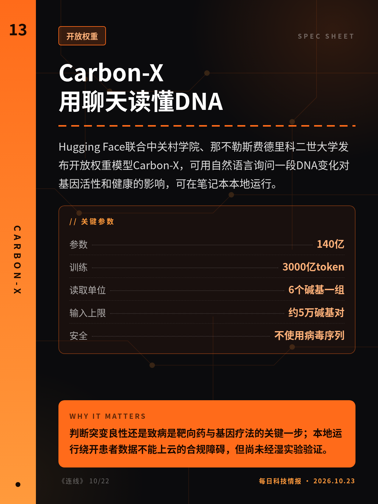
Hugging Face联合中关村学院、那不勒斯费德里科二世大学发布开放权重模型Carbon-X，可用自然语言询问一段DNA变化对基因活性和健康的影响，可在笔记本本地运行。
判断突变良性还是致病是靶向药与基因疗法的关键一步；本地运行绕开患者数据不能上云的合规障碍，但尚未经湿实验验证。
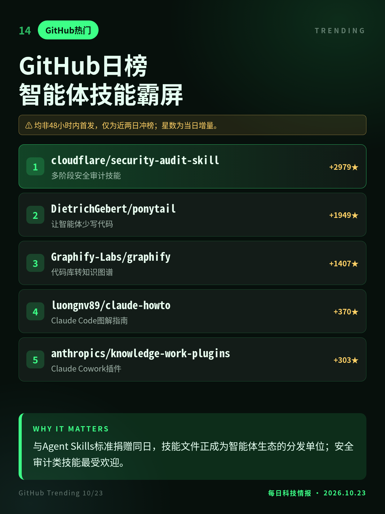
10/23早GitHub日榜前列几乎都是给编程智能体用的技能与插件：Cloudflare的多阶段安全审计技能单日涨约3000星，代码库转知识图谱、Claude Code指南紧随其后。
与Agent Skills标准捐赠同日，技能文件正成为智能体生态的分发单位；安全审计类技能最受欢迎。
融资规模与估值来自匿名知情人士，OpenAI未确认，条款未定。
金额与投资方名单来自匿名知情人士，尚未最终敲定，公司未回应。
细节来自匿名知情人士，多数银行未公开置评。
仅基于IP地理定位，可能经代理转发；Lava称不能证明存在违规。
均非48小时内首发，仅为近两日冲榜；星数为当日增量。
切换深浅两套图时，下载按钮会跟着当前这套走。黄标条目在新闻稿或官方口径出现前，请勿写成已交割或已定日期。上一期专区：2026-10-22。